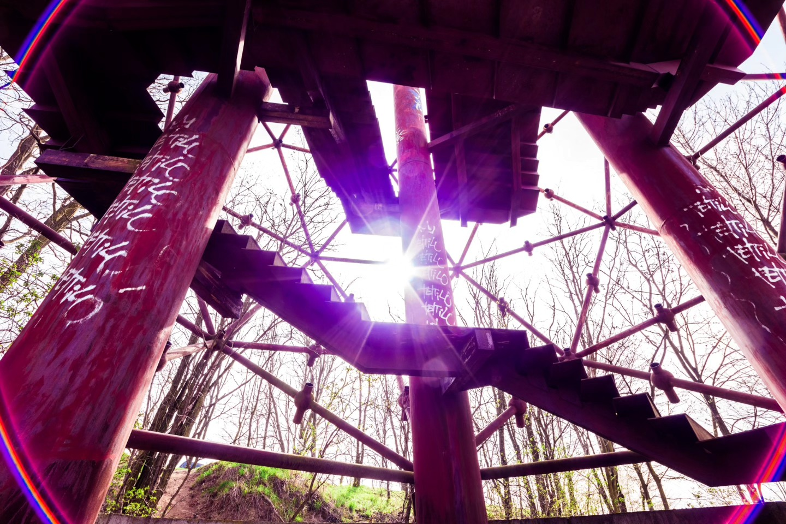
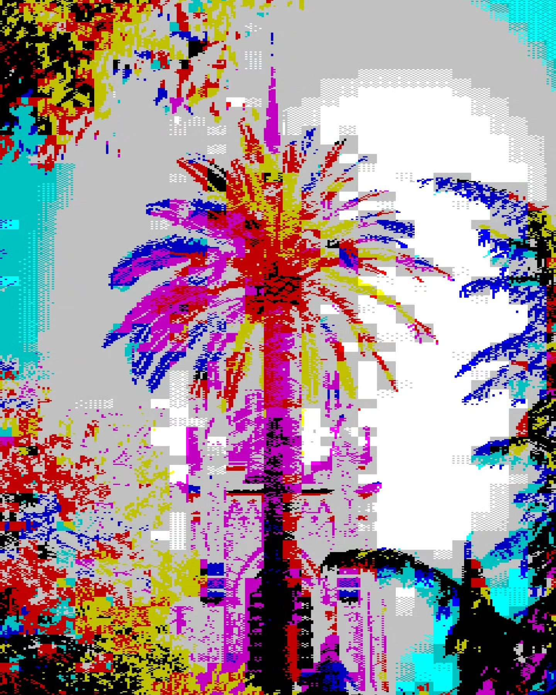
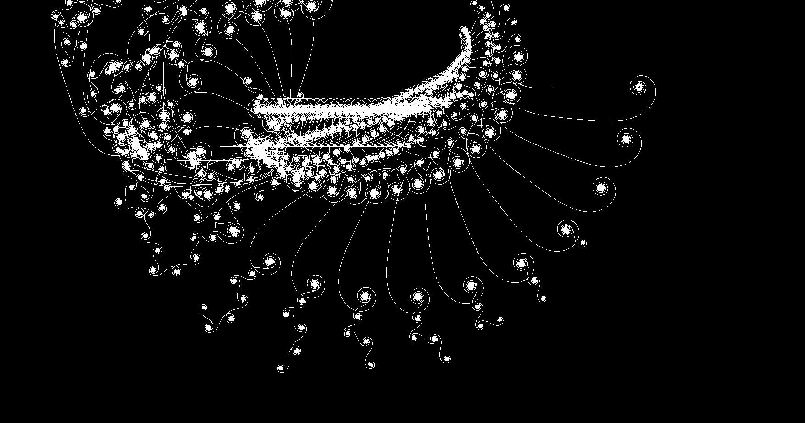
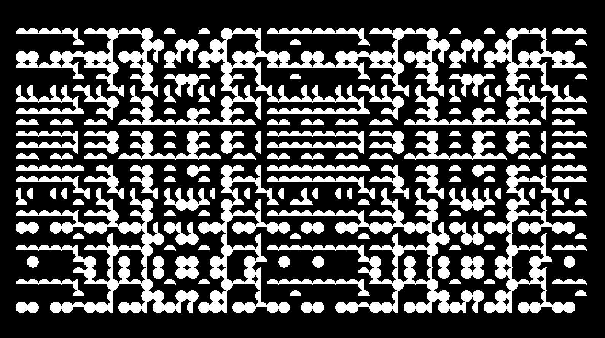
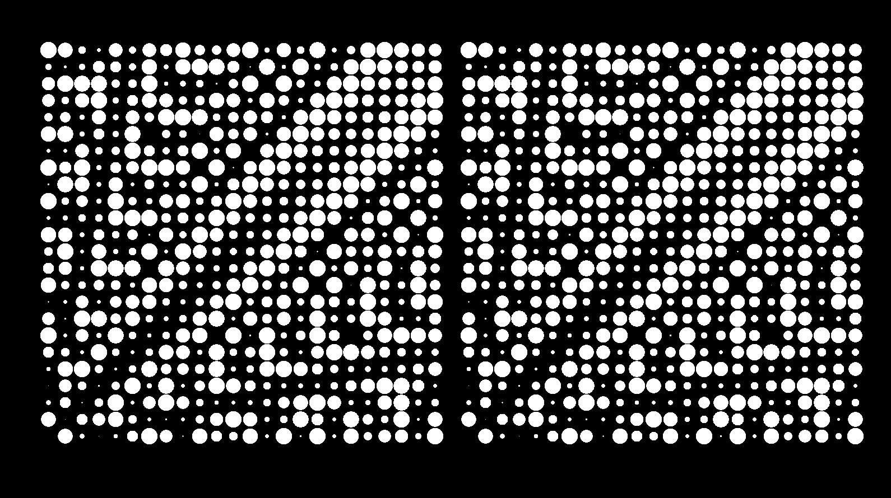
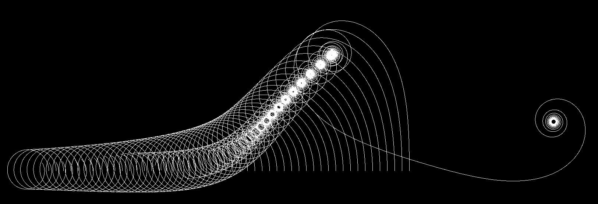
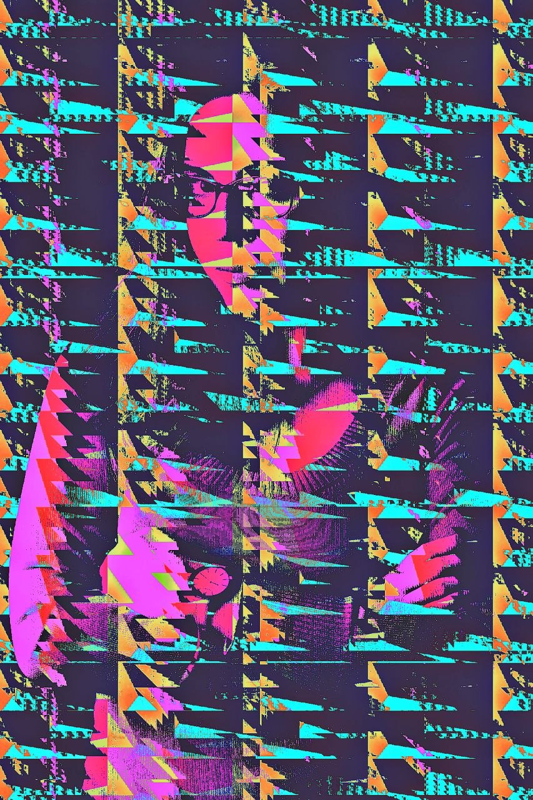

[ GLITCH PLEASE! APP ]
GLITCH PLEASE!
— glitch talk —
MICHAL JENČO · @michal.jenco
International Glitch Festival 2026
Zagreb · 24 April · 19:30
my 14-year path from photographer
to glitch-app user to guy who writes his own glitch code.
30 min · some story, some live demo, take-home challenge at the end
scan for the files + the .apk
01 / 21
TRACK A
ARTIST
2016 →
took countless photos.
used glitch apps on my phone.
never coded any effects myself.
TRACK B
CODER
2017 →
CS degree, then python at work.
never made anything visual.
for like 10 years these two just didn't talk to each other
02 / 21

2012 · the camera
before any of this, a photographer.
parents asked me for a christmas present idea in 2012 and I somehow thought a camera would be cool. turns out it was more than cool.
for the next few years I was obsessed. tens of thousands of photos, mostly on long walks around Brno.
posted it all on facebook, basically stopped around 2016. but those 4 years are why I can compose a frame. every glitch I make later stands on top of this.
archive: facebook.com/michal.jenco.photography
03 / 21
Brno walks · colour & bloom
blossoms, flowers, pastel colour experiments · Brno, 2012–2016
04 / 21
Brno walks · city & mood
the city at night, walks home after dark, quiet streets · Brno, 2012–2016
05 / 21
Brno walks · close & quiet
leaves, dried flowers, shadows · the details you'd miss if you weren't paying attention
06 / 21
2016 · the apps that hooked me

8Bit Photo Lab
in 2016 I was a glitch baby, not a glitch coder, never occured to me
07 / 21
TRACK B · the day-job coder
2017graduated computer engineering
2017 →python at work, multiple different jobs
2019spent months handcoding a MIDI sequencer as a hobby
work was work nothing visual. the MIDI sequencer was a great creative outlet, but not a visual one
so I made images on my phone and wrote code in a terminal, and those two things basically didn't overlap.
08 / 21
ComputerArt2018 · the dormant seed

particle swarm

procedural dot grid

halftone dots

Lissajous curves
side project, year after graduating.
python scripts generating images from math — particles, curves, tilings. then I forgot about it for 7 years.
09 / 21
THE RETURN · 2024
78 weeks ago...
after 2016 I just stopped. no glitching for almost 8 years. don't really know why, just stopped.
then one day in late 2024 I made a new glitch and posted it on instagram with the caption "in my glitch art era (will last approximately 2 hours)". that was 78 weeks ago.
turns out it lasted way longer than 2 hours.
this time I was using Vaporwavewalls · OneLab · 8Bit Photo Lab (yep, the same 8Bit Photo Lab from 2016, still kicking). still not coding anything myself, still just a user. but this time got way more obsessed than in 2016.
10 / 21
FACES · 2024–2025

bold stripe

halftone

duotone

RGB scanline
most of what I made were face pieces. all on my phone with Vaporwavewalls · OneLab · 8Bit Photo Lab. no code yet.
11 / 21
NOT-FACES · 2024–2025

text collage

repetition typography

vaporwave

classical / sculpture
and the ones that weren't faces. text, vaporwave, sculpture, abstract. also dug up my 2009 Sony Ericsson W910i glitches — full archaeology phase.
12 / 21
.png)
2025 · one thought:
"what if I pointed that math
at a photograph?"
opened pycharm, wrote a script that runs every pixel of a photo through some math (modulo, sin waves, that kind of thing). turned out to be basically the same math I used in 2018, just this time applied to an existing image instead of generating one from nothing. and the first real output looked like nothing I'd seen in any app.
13 / 21
Glitch Please!
Android · Kotlin · Google Gemini 2.5 + Claude Code Opus 4.6/7
- 37 glitch algorithms, grouped into 7 families (Specialists, Classics, Wave Riders, Deep Glitch, Spacetime, Decay, Channel Dominance)
- palette is a first-class thing — extract from your image, generate random, remap everything
- use any result as a new source and glitch it again (this is my favorite feature honestly)
- live editors for VHS, Muse and Color Gate — scrub the params in real time
- export video loops where the params keep changing frame by frame
- every result remembers how it was made, so you can reproduce it later if you want
14 / 21
LIVE DEMO
next ~15 min is just me on my phone, mirrored up here
load an image, glitch it, mess with palettes, feed results back in, play with live sliders, export a video loop, then one bit of code
15 / 21
LIVE DEMO
next ~15 min is just me on my phone, mirrored up here
load an image, glitch it, mess with palettes, feed results back in, play with live sliders, export a video loop, then one bit of code
16 / 21
ORIGINAL algorithm · the first one I ever coded
fun original(r: Int, g: Int, b: Int, x: Int, y: Int,
variant: Int, p: Params, rand: Random): Triple {
val rShift = (x * p.wMult + variant * p.iMult) % p.rCycle * p.rMult
val gShift = y * p.hMult - variant * p.iMult
val bShift = (y % p.hCycle) * p.hMult - x * p.wMult
val nr = mod256(r + rShift + rand.r)
val ng = mod256(g + gShift + rand.g)
val nb = mod256(b + bShift + rand.b)
return Triple(nr, ng, nb)
}
in plain english: for every pixel, take its R/G/B values and shift each one by a chunk of math based on its position in the image. add a random nudge. then wrap the result at 256 — if the number goes over 255, it loops back to 0. that wrap is the glitch. the byte overflow is where the rainbow shimmer and hard color jumps come from, the feeling that something broke. millions of pixels doing this with slightly different math = the whole image bending.
17 / 21
YOUR TURN
you, the app, 48 hours, €60 to win
take-home challenge, details on the next slide
18 / 21
#glitchpleasechallenge2026
GLITCH this image.
single image, series, video or video grid, whatever you want
ONLY the app — no photoshop or anything else
post it on instagram, tag me as collaborator (I auto-accept), use the hashtag
Deadline: SUN 26 APR · midnight CET
I pick the winners, it's subjective. bonus points for recursive glitches, cool palette work, video loops
winners announced Mon 27 Apr on my instagram
19 / 21
THANK YOU
- @glitch_cult for having me and organizing all this
- shoutout to whoever made D3lta, SLMMSK, Tlenogram, 8Bit Photo Lab, Vaporwavewalls and OneLab
those were my glitch universes for years
- and the biggest thank you — my renaissance-era cheerleaders on instagram:
-
@dreamco.exe (first to comment — "beautiful!!")
@dominikafab · @monce11o - my besties always providing selfies to glitch · :3
@vary.aesthetic · @moonjelly.jpg - some of the most prolific artists I talked to and collaborated with the most · <3
Let's break some pixels. ⚡
20 / 21

Q&A
stuff people usually ask:
why android and not web?
·
iOS when?
·
is it open source?
·
what are you adding next?
·
can I use it commercially?
21 / 21